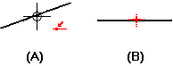

Make elements or key points horizontal or vertical
-
Choose Home or Sketching tab→Relate group→Horizontal/Vertical .
-
Do one of the following:
-
To make a line horizontal or vertical, click the line (A).

-
To make two key points horizontal or vertical, click a key point, and then click another key point.
Tip:The line's current orientation determines how it is positioned after you select it. For example, if a line is closer to a horizontal orientation than a vertical orientation, it becomes horizontal.
-